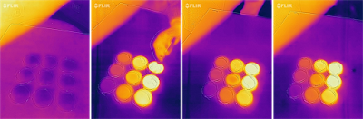

A differential thermal analysis of acid-base titration
Skip the pH indicator: if every reaction absorbs or releases heat, a thermal camera and a small array of Petri dishes can serve as a nearly universal titration readout.
Titration is a common laboratory method of quantitative chemical analysis for determining the unknown concentration of an identified analyte. A reagent, called the titrant, is prepared as a standard solution. A known concentration and volume of titrant reacts with a solution of analyte to determine its concentration. A titration is typically done with a burette that drops titrant into an Erlenmeyer flask containing the analyte. A pH indicator is used to determine whether the equivalence point has been reached. The pH indicator usually depends on the analyte and the titrant. As all chemical processes absorb or release heat, a differential thermal analysis based on infrared imaging may provide a universal indicator as the technique depends only on the heat of reaction and thermal energy is universal.
In this article, we use an acid-base titration — the determination of the concentration of an acid or base by exactly neutralizing the acid or base with a base or acid of known concentration, as an example.

A solution of 10% NaOH was prepared as the analyte of "unknown" concentration and 1%, 3%, 5%, 7%, 10%, 12%, 15%, 18%, and 20% HCl were used as the titrant. The experiment was conducted with a 3×3 array of Petri dishes. Hence, we call this setup as dish-array titration. Preliminary results of this first experiment appeared to be encouraging, but we have to be cautious as the dissolving of HCl after the acid-base neutralization completes can also release a significant amount of heat. How to separate the thermal signatures of reaction and dissolving requires some further thinking.
← Back to Infrared Explorer